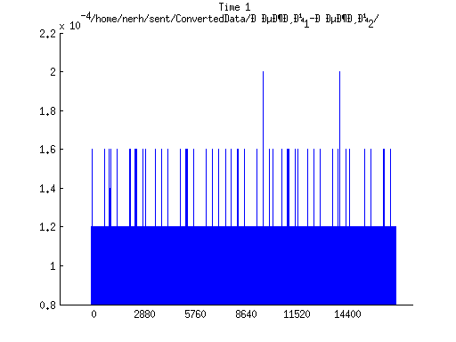

Contents
Объединение данных с отметчика и датчиков давления
При получении скорости и ускорения в данном случае расчет производился по времени между пиками отметчика, а не времени между фронтами
sourceFolders = ['/home/nerh/sent/ConvertedData/Режим_1-Режим_2/';'/home/nerh/sent/ConvertedData/Режим_2-Режим_3/']; files = [9,11];
Загрузка исходных данных
%pressure = load('/home/nerh/sent/ConvertedData/Режим_1/Pressure_7.mat'); %speed = load('/home/nerh/sent/ConvertedData/Режим_1/Speed_7_interp.mat'); for sf = 1:1 for fs = 1:files(sf)
sourcefile = sprintf('%sPressure_%d.mat',sourceFolders(sf,:),fs); pressure = load(sourcefile); sourcefile = sprintf('%sSpeed_%d_interp.mat',sourceFolders(sf,:),fs); speed = load(sourcefile);
Обрабатка исходных данных
%Получаем информацию о давлении pressureParams = getPressureParams(pressure.loadedFile.data(:,3)', 0.5, pressure.loadedFile.frequency, 30,10,1); %Получаем информацию о скорости, ускорении, а также отображение времени на %угол поворота speedParams = getSpeedParams(speed.loadedFile.data(:,3)',speed.loadedFile.data(:,4)',speed.loadedFile.frequency,1440);
Results: pressure peaks -> min: 1.51 max: 1.56 mean: 1.53 var: 0.0002 %: 0.95 time cycles -> min: 0.3328 max: 0.3345 mean: 0.3336 var: 0.00000019 %: 0.13 injection peaks -> min: 0.78 max: 1.50 mean: 1.17 var: 0.1234 %: 30.00 injection time -> min: 0.3276 max: 0.6656 mean: 0.3806 var: 0.01581647 %: 33.04 inj&peak time -> min: -0.0019 max: 0.3326 mean: 0.0391 var: 0.01211756 %: 281.42 dying peak -> min: -0.12 max: 1.48 mean: 1.16 var: 0.2331 %: 41.56 dying time -> min: 0.1992 max: 1.0016 mean: 0.4299 var: 0.06161004 %: 57.74 injection durat -> min: 0.0004 max: 0.0084 mean: 0.0042 var: 0.00000722 %: 64.60

Results: pressure peaks -> min: 1.50 max: 1.58 mean: 1.52 var: 0.0005 %: 1.50 time cycles -> min: 0.3016 max: 0.3041 mean: 0.3031 var: 0.00000047 %: 0.23 injection peaks -> min: 0.79 max: 1.45 mean: 1.29 var: 0.0590 %: 18.87 injection time -> min: 0.2992 max: 0.6096 mean: 0.4547 var: 0.02754731 %: 36.50 inj&peak time -> min: -0.0028 max: 0.3052 mean: 0.1015 var: 0.02278125 %: 148.72 dying peak -> min: 1.21 max: 1.50 mean: 1.35 var: 0.0128 %: 8.35 dying time -> min: 0.2996 max: 0.6104 mean: 0.4043 var: 0.02518844 %: 39.25 injection durat -> min: 0.0004 max: 0.0048 mean: 0.0024 var: 0.00000422 %: 87.09
Results: pressure peaks -> min: 1.50 max: 1.55 mean: 1.53 var: 0.0003 %: 1.08 time cycles -> min: 0.2928 max: 0.2977 mean: 0.2944 var: 0.00000226 %: 0.51 injection peaks -> min: -0.07 max: 1.48 mean: 1.24 var: 0.2512 %: 40.56 injection time -> min: 0.2252 max: 1.1912 mean: 0.4264 var: 0.09296026 %: 71.51 inj&peak time -> min: -0.0017 max: 0.8970 mean: 0.1668 var: 0.08233447 %: 172.00 dying peak -> min: -0.09 max: 1.44 mean: 1.13 var: 0.1827 %: 37.98 dying time -> min: 0.2912 max: 0.8868 mean: 0.3949 var: 0.03886286 %: 49.92 injection durat -> min: 0.0004 max: 0.3068 mean: 0.0403 var: 0.00924215 %: 238.43
Results: pressure peaks -> min: 1.51 max: 1.58 mean: 1.54 var: 0.0005 %: 1.51 time cycles -> min: 0.2836 max: 0.2910 mean: 0.2869 var: 0.00000581 %: 0.84 injection peaks -> min: 0.82 max: 1.49 mean: 1.28 var: 0.0710 %: 20.85 injection time -> min: 0.2812 max: 0.5716 mean: 0.3438 var: 0.01623373 %: 37.06 inj&peak time -> min: -0.0017 max: 0.2871 mean: 0.0424 var: 0.01164591 %: 254.49 dying peak -> min: -0.08 max: 1.56 mean: 1.03 var: 0.2347 %: 47.17 dying time -> min: 0.2820 max: 1.1508 mean: 0.5454 var: 0.13375077 %: 67.06 injection durat -> min: 0.0036 max: 0.0084 mean: 0.0058 var: 0.00000389 %: 34.23
Results: pressure peaks -> min: -0.07 max: 1.50 mean: 0.78 var: 0.0956 %: 39.65 time cycles -> min: 0.2552 max: 0.2950 mean: 0.2840 var: 0.00009265 %: 3.39 injection peaks -> min: -0.08 max: 1.52 mean: 0.27 var: 0.3822 %: 227.73 injection time -> min: 0.0000 max: 0.5044 mean: 0.0736 var: 0.01786874 %: 181.65 inj&peak time -> min: -0.0051 max: 0.2925 mean: 0.0309 var: 0.00755885 %: 281.68 dying peak -> min: -0.08 max: 1.47 mean: 0.26 var: 0.3252 %: 222.41 dying time -> min: 0.0000 max: 0.6652 mean: 0.0932 var: 0.02633977 %: 174.21 injection durat -> min: 0.0000 max: 0.0088 mean: 0.0012 var: 0.00000612 %: 202.82

Results: pressure peaks -> min: 1.54 max: 1.61 mean: 1.58 var: 0.0004 %: 1.24 time cycles -> min: 0.2831 max: 0.2861 mean: 0.2852 var: 0.00000071 %: 0.29 injection peaks -> min: 1.08 max: 1.56 mean: 1.42 var: 0.0330 %: 12.81 injection time -> min: 0.2816 max: 0.5740 mean: 0.3670 var: 0.01943386 %: 37.99 inj&peak time -> min: -0.0021 max: 0.2868 mean: 0.0786 var: 0.01764675 %: 169.06 dying peak -> min: 0.95 max: 1.17 mean: 1.06 var: 0.0070 %: 7.87 dying time -> min: 0.2832 max: 0.5704 mean: 0.3565 var: 0.01737437 %: 36.98 injection durat -> min: 0.0032 max: 0.0080 mean: 0.0060 var: 0.00000354 %: 31.31
Results: pressure peaks -> min: 1.57 max: 1.65 mean: 1.61 var: 0.0007 %: 1.60 time cycles -> min: 0.2848 max: 0.2868 mean: 0.2857 var: 0.00000034 %: 0.20 injection peaks -> min: 1.00 max: 1.58 mean: 1.36 var: 0.0822 %: 21.12 injection time -> min: 0.2852 max: 0.8552 mean: 0.5012 var: 0.07443744 %: 54.44 inj&peak time -> min: -0.0006 max: 0.5708 mean: 0.2010 var: 0.05485635 %: 116.55 dying peak -> min: -0.13 max: 1.59 mean: 1.20 var: 0.3696 %: 50.48 dying time -> min: 0.2816 max: 1.0212 mean: 0.5516 var: 0.10471859 %: 58.67 injection durat -> min: 0.0004 max: 0.0052 mean: 0.0022 var: 0.00000389 %: 89.63
Results: pressure peaks -> min: 1.59 max: 1.67 mean: 1.62 var: 0.0004 %: 1.26 time cycles -> min: 0.2844 max: 0.2863 mean: 0.2856 var: 0.00000032 %: 0.20 injection peaks -> min: 0.84 max: 1.64 mean: 1.26 var: 0.1033 %: 25.57 injection time -> min: 0.2808 max: 0.8612 mean: 0.3678 var: 0.04735151 %: 59.17 inj&peak time -> min: 0.0004 max: 0.5754 mean: 0.0889 var: 0.03729817 %: 217.25 dying peak -> min: 0.99 max: 1.62 mean: 1.24 var: 0.0428 %: 16.68 dying time -> min: 0.2816 max: 0.8580 mean: 0.3575 var: 0.04090509 %: 56.57 injection durat -> min: 0.0040 max: 0.0092 mean: 0.0067 var: 0.00000459 %: 31.93
Results: pressure peaks -> min: 1.65 max: 1.71 mean: 1.67 var: 0.0004 %: 1.20 time cycles -> min: 0.2853 max: 0.2861 mean: 0.2858 var: 0.00000005 %: 0.08 injection peaks -> min: -0.08 max: 1.64 mean: 0.74 var: 0.6570 %: 110.15 injection time -> min: 0.0000 max: 1.2114 mean: 0.2674 var: 0.12218951 %: 130.74 inj&peak time -> min: -0.0033 max: 0.9248 mean: 0.2361 var: 0.09654580 %: 131.61 dying peak -> min: -0.09 max: 1.56 mean: 0.69 var: 0.5755 %: 109.43 dying time -> min: 0.0000 max: 0.9276 mean: 0.2295 var: 0.07236800 %: 117.20 injection durat -> min: 0.0000 max: 0.9282 mean: 0.0634 var: 0.05723163 %: 377.08
Постороение графика с заменой времени на угол поворота
screenSize = get(0,'ScreenSize'); f1 = figure; hold on plot(speedParams.angle_time.angle(1:length(pressure.loadedFile.data(:,3))), pressure.loadedFile.data(:,3)) stem(speedParams.angle_time.angle(speedParams.circleBeginTime), zeros(length(speedParams.circleBeginTime))... +max(pressure.loadedFile.data(:,3)),'r') set(gca,'XTick',0:720:speedParams.angle_time.angle(end)) title(sprintf('Pressure %d\n%s',fs,sourceFolders(sf,:))) hold off set(f1,'Position',[0 0 screenSize(3), screenSize(4)]); figure plot(speedParams.speed_absc,speedParams.speed*(2*pi/360)) title(sprintf('Speed %d\n%s',fs,sourceFolders(sf,:))) figure plot(speedParams.acceleration_absc,speedParams.acceleration*(2*pi/360)) title(sprintf('Acceleration %d\n%s',fs,sourceFolders(sf,:))) figure hold on plot(speedParams.angle_time.angle(speedParams.leAbsc),speedParams.leTime) set(gca,'XTick',0:4*720:speedParams.angle_time.angle(end)) title(sprintf('Time %d\n%s',fs,sourceFolders(sf,:))) hold off %mean(speedParams.speed)


end; end;